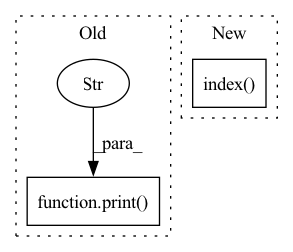

Pattern ID :4390

Before Change
data_path = os.path.join(os.path.dirname(__file__), os.environ.get("JINA_DATA_FILE", None))
//import glob
with f, open(data_path) as fp:
print(f"type: {type(fp)}")
print(f"lines: {type(np.array(fp.readlines()))}")
d = Document.from_ndarray(np.array(fp.readlines()))
num_docs = min(num_docs, len(fp.readlines()))
with TimeContext(f"QPS: indexing {num_docs}", logger=f.logger):
After Change
print(f"dddddd {dd}")
with TimeContext(f"QPS: indexing {num_docs}", logger=f.logger):
//f.post(on="/index", request_size=16, docs=d, parameters={"source_path": "./data"}, inputs=d)
f.index(d)
//f.search()
"""
metas = {"workspace": "./workspace"}, parameters = {"source_path": "./workspace",
In pattern: SUPERPATTERN
Frequency: 4
Non-data size: 2
Instances
Fragment ID: 16172966
Project Name: jina-ai/examples
Commit Name: 5a64b61e836d0126f174b465dbe6ce30c0dbba61
Time: 2021-05-21
Author: zhuoran2@andrew.cmu.edu
File Name: wikipedia-sentences/app.py
M Class Name: AnonimousClass
N Class Name: AnonimousClass
M Method Name: index(1)
N Method Name: index(1)
M Parent Class:
N Parent Class:
M File Name: wikipedia-sentences/app.py
N File Name: wikipedia-sentences/app.py
M Start Line: 37
M End Line: 55
N Start Line: 40
N End Line: 75
'>
Before Change
src_ids = X[:, 0, 0].squeeze().tolist() // (1, 2, 2, L) -> (1, L) -> (L) -> list
pred_ids = transformer.predict(X).squeeze().tolist() // (1, L) -> (L) -> list
print([tokenizer.id_to_token(src_id) for src_id in src_ids])
print("->")
print([tokenizer.id_to_token(pred_id) for pred_id in pred_ids])
if __name__ == "__main__":
After Change
X = InferInputsBuilder(tokenizer, config["max_length"])(srcs=[config["kor"]])
src_ids = X[0, 0, 0].tolist() // (1, 2, 2, L) -> (L) -> list
pred_ids = transformer.predict(X).squeeze().tolist() // (1, L) -> (L) -> list
pred_ids = pred_ids[: pred_ids.index(tokenizer.eos_token_id)] // noqa
print(tokenizer.decode(ids=src_ids), "->", tokenizer.decode(ids=pred_ids))
'>
Fragment ID: 16172964
Project Name: eubinecto/the-clean-transformer
Commit Name: fec218b75568e8fe876d9015cb2cd186661303ef
Time: 2021-12-11
Author: eubinecto
File Name: main_infer.py
M Class Name: AnonimousClass
N Class Name: AnonimousClass
M Method Name: main(0)
N Method Name: main(0)
M Parent Class:
N Parent Class:
M File Name: main_infer.py
N File Name: main_infer.py
M Start Line: 13
M End Line: 26
N Start Line: 17
N End Line: 24
'>
Before Change
results = plot_util.load_results(dirs, names=qualities + [xlabel],
enable_monitor=False, x_bound=[xlabel, x_bound], use_buf=use_buf)
print("---- load dataset --- ")
// y_names = ["acc/adjusted_r2", "acc/accurancy_trans"]
// eval_policy/coupon_avg_rate
// postfixs = ["coupon_avg_rate", "coupon_predict_rate", "roi_avg", "roi_predict", "sum_avg_gmv", "sum_fos",
// "sum_predict_gmv", "sum_spend"]
After Change
misc_scale_index = []
for i in range(len(qualities)):
if i in misc_scale_index:
scale_dict[qualities[i]] = misc_scale[misc_scale_index.index(i)]
else:
scale_dict[qualities[i]] = 1
_, _, lgd, texts = plot_util.plot_results(results, xy_fn= lambda r, y_names: csv_to_xy(r, DEFAULT_X_NAME, y_names,
'>
Fragment ID: 16172963
Project Name: xionghuichen/rlassistant
Commit Name: c960619032588e7490bfcecc6c8aa20a04a0bddf
Time: 2020-12-21
Author: zpcxh95@outlook.com
File Name: RLA/easy_plot/plot_func.py
M Class Name: AnonimousClass
N Class Name: AnonimousClass
M Method Name: plot_res_func(17)
N Method Name: plot_res_func(19)
M Parent Class:
N Parent Class:
M File Name: RLA/easy_plot/plot_func.py
N File Name: RLA/easy_plot/plot_func.py
M Start Line: 91
M End Line: 173
N Start Line: 95
N End Line: 150